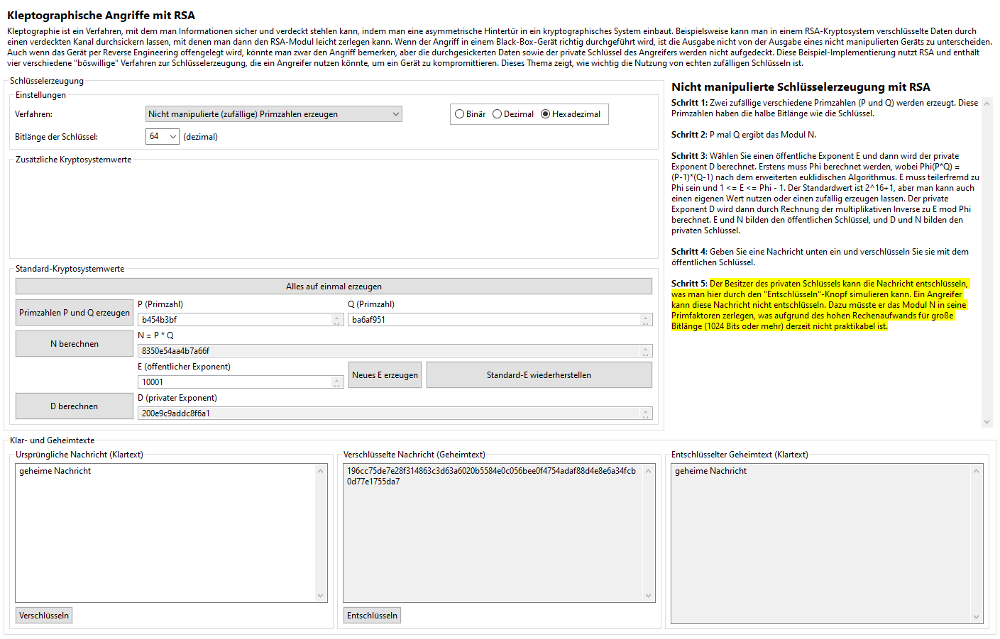

Die nicht-manipulierte Schlüsselerzeugung dient in dem Kleptographie-Plug-in als Gegenbeispiel zu den verschiedenen Angriffsverfahren. Diese RSA-Implementierung ist geradlinig und schließt fortgeschrittenere, sicherheitsverbessernde Verfahren wie Paddingalgorithmen nicht ein. Wenn Sie mit RSA nicht vertraut sind oder nähere Infos zu der Kernfunktionalität des Algorithmus suchen, können Sie sich mit dem RSA-Visualisierungs-Plug-in vertraut machen.
Es ist wichtig, dass man versteht, wie die graphische Benutzerschnittstelle des Kleptographie-Plug-ins funktioniert; sie ist nicht identisch mit der des RSA-Plug-ins. Zuerst werden Sie wahrscheinlich die Schlüsselerzeugungs-Einstellungen auf der linken Seite oben bemerken:

Die erste Drop-Down-Auswahlliste erlaubt dem Benutzer, einen Schlüsselerzeugungs-Algorithmus zu wählen und damit festzulegen, ob und wenn ja, welcher Angriff durchgeführt wird. Wegen der verschiedenen Funktionalität jedes Algorithmus sind unterschiedliche Buttons und Textfelder für jeden Angriff verfügbar. Bitte beachten Sie, dass der Programmfluss linear ist: Jeder Algorithmus hat eine bestimmte Reihenfolge. Man darf immer rückwärts gehen, aber das Überspringen von Schritten ist nicht möglich, genauso wie in realen Anwendungen.
Die zweite Drop-Down-Auswahlliste erlaubt, die Schlüssellänge (auf Dezimalzahl) in Bit zu wählen. Dieser Wert muss gerade sein, weil die im Algorithmus benutzten Primzahlen genau die Hälfte der Länge der Schlüssel sein müssen. Die Länge muss mindestens 8 Bit sein wegen begrenzter Schlüsselwerte; es gibt keine obere Grenze, wobei man mit großen Werten vorsichtig sein muss, weil die erforderliche Zeit zur Schlüsselerzeugung bei manchen Rechnern und manchen Algorithmen mehrere Minuten sein kann. Bei unmanipulierter Schlüsselerzeugung ist eine Bitlänge über 1024 oder 2048 nicht empfohlen, und bei dem Pseudozufallsgenerator und dem SETUP-Angriff ist eine Bitlänge über 256 oder 512 nicht empfohlen. Dies sind nur Empfehlungen, die man natürlich ignorieren kann, wenn man geduldig ist oder einen leistungsfähigen Rechner besitzt.
Die letzte Einstellung ist die Anzeige der Zahlenbasis. Man kann die kryptografischen Werte des Geräts in binär, dezimal oder hexadezimal anschauen. Besonders für große Schlüssel ist hexadezimal empfohlen, weil es am kompaktesten ist.
Unmanipulierte Schlüsselerzeugung hat die einfachste Reihenfolge, obwohl jeder Angriff im Wesentlichen auf der gleichen Reihenfolge basiert. Die ersten Schritte erfolgen stets in der Mitte des Bildschirms, wo die interne Funktionalität des Geräts simuliert wird (Erzeugung eines gültigen Schlüsselpaars). Die Buttons auf der linken Seite sind in einer bestimmten Reihenfolge zu drücken. Eine Beschreibung jedes Schrittes erfolgt auf der rechten Seite. Man darf eigene Werte für P und Q eingeben, aber sie müssen Primzahlen der richtigen Länge sein. Der öffentliche Exponent E darf auch eingegeben werden, aber er muss gleichzeitig kleiner als und relativ prim zu Phi(P * Q) sein. Der Standard- und empfohlene Wert für E lautet 2^16+1 (dezimal 65537 oder hexadezimal 10001), weil dieser Wert optimale Rechengeschwindigkeit liefert.
Nachdem das Schlüsselpaar erzeugt worden ist, kann man den unteren Teil des Bildschirmes benutzen, um das Senden einer Nachricht zu simulieren, indem man die Nachricht mit dem öffentlichen Schlüssel des Empfängers verschlüsselt. Schließlich kann man auch den Empfänger simulieren, indem man die verschlüsselte Nachricht mit seinem privaten Schlüssel entschlüsselt.
Klicken Sie hier, um zurück zum Kleptographie-Index zu gehen, oder hier, um zur nächsten Seite (Nutzung einer festen Primzahl P) zu gehen.